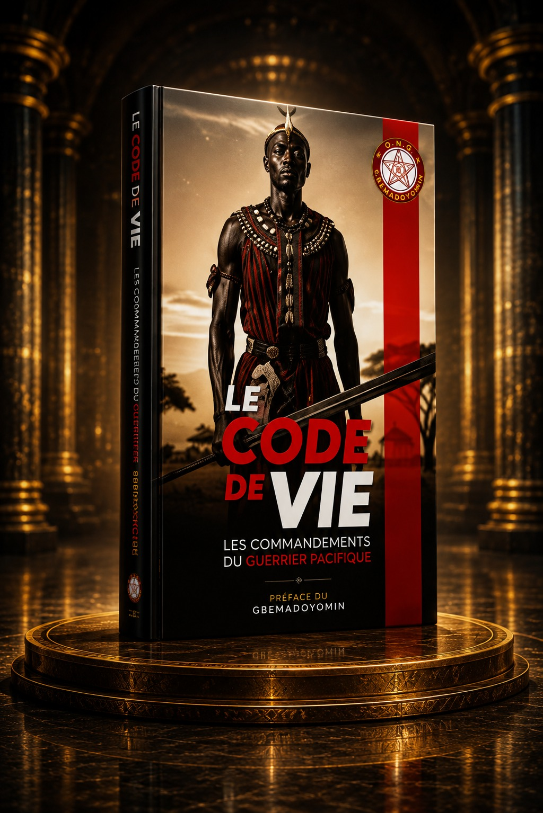
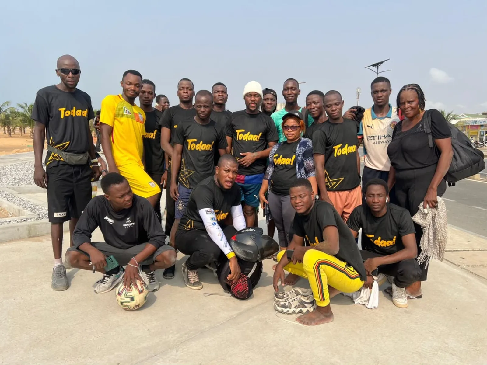
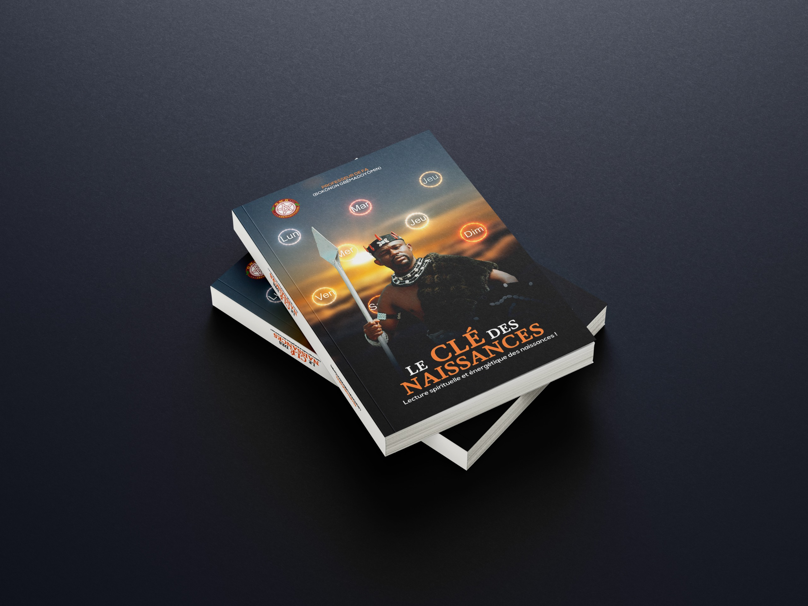
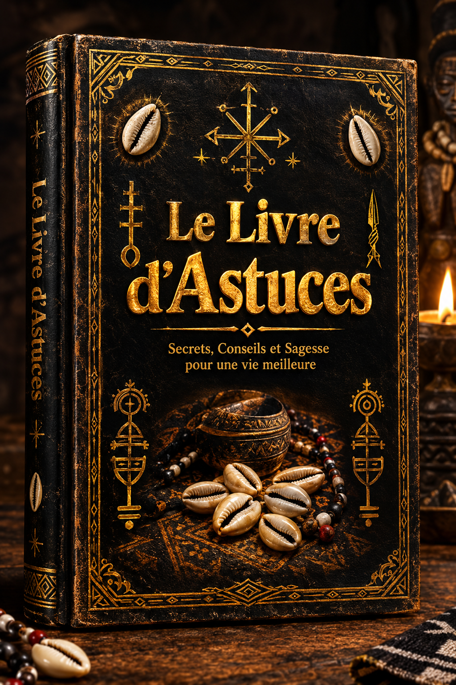
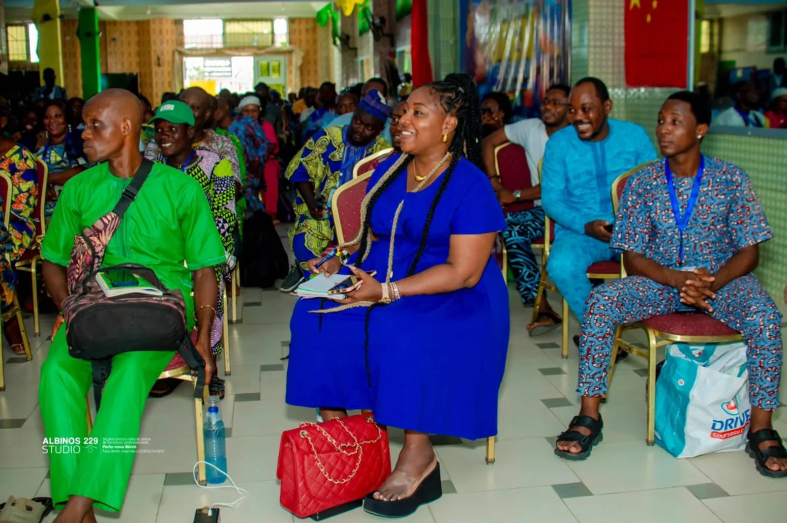
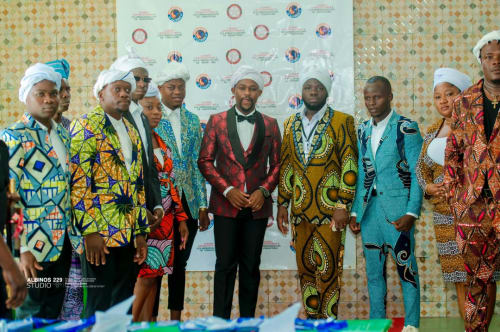

01

Le Code de Vie : Les Commandements du Guerrier Moderne
Principes de vie, discipline intérieure et philosophie pratique pour évoluer dans le monde contemporain.

Chercheur • Auteur • Professeur de Fa
Chercheur en traditions africaines, auteur et dignitaire du culte Vodoun.
De son nom civil Agbe Hountondji Olouwatogni Ricardo, il œuvre à l'étude, la transmission et la valorisation des savoirs traditionnels africains — au croisement de la science, de la tradition et de la philosophie.
Parcours complet
De son origine à Massè jusqu'à ses engagements actuels pour la transmission des savoirs africains.
BOKONON GBÊMADOYÔMIN — Bokônon Gbêmadoyômin
De son nom civil AGBE HOUNTONDJI OLOUWATOGNI RICARDO, BOKONON GBÊMADOYÔMIN est une personnalité béninoise engagée dans l'étude, la transmission et la valorisation des savoirs traditionnels africains.
Ses travaux et ses activités s'articulent principalement autour du Fa, de la géomancie africaine, des traditions initiatiques et du patrimoine culturel et spirituel du Bénin.
Originaire de Massè, dans le département du Plateau, au Bénin, où il est né le 9 mai, il est titulaire d'une maîtrise en physique fondamentale. Cette formation scientifique nourrit un profil singulier, à la croisée de la réflexion académique, de la recherche sur les traditions ancestrales et de la transmission des connaissances.
Professeur de Fa et expert-consultant en géomancie africaine, il s'intéresse aux systèmes de pensée hérités des générations anciennes, à leurs principes d'interprétation ainsi qu'à leurs dimensions philosophiques, symboliques et culturelles. En tant que dignitaire du culte Vodoun, il œuvre à la préservation de ce patrimoine spirituel et à une meilleure compréhension de sa place dans les sociétés contemporaines.
Convaincu que les traditions africaines constituent des héritages vivants, porteurs de mémoire, de valeurs et de visions du monde, il défend leur étude, leur documentation et leur transmission avec rigueur. Ses enseignements, conférences et interventions publiques visent notamment à rendre les connaissances relatives au Fa et aux spiritualités africaines plus accessibles aux jeunes générations et à un public international.
Fondateur et président de l'ONG GBÊMADOYÔMIN, il s'investit dans la promotion des cultures africaines et dans des initiatives à caractère culturel et social. Il anime également le mouvement VIBRATION SACRÉE, consacré au rassemblement, à la sensibilisation et à la transmission des connaissances traditionnelles.
Son engagement se prolonge dans l'écriture et la conception de projets éditoriaux dédiés aux sciences sacrées africaines, à la philosophie de vie et aux traditions initiatiques. À travers ces travaux, il ambitionne de structurer les savoirs, de préserver les héritages ancestraux et de proposer de nouveaux supports de transmission adaptés aux enjeux de notre époque.
Il porte une ambition qui dépasse le cadre de la pratique traditionnelle : contribuer à la reconnaissance intellectuelle et culturelle des détenteurs de savoirs africains, encourager le dialogue entre les connaissances académiques et les héritages ancestraux, et favoriser une meilleure compréhension des systèmes de pensée africains à l'échelle internationale.
Son parcours s'inscrit ainsi dans une dynamique de sauvegarde du patrimoine culturel immatériel, de valorisation des traditions béninoises et de transmission aux générations futures.
En quelques chiffres
Les grandes étapes
Un itinéraire qui relie la rigueur académique à la profondeur des traditions africaines.
Naissance le 9 mai à Massè, dans le département du Plateau, au Bénin.
Une formation scientifique qui nourrit une approche structurée et méthodique du savoir.
Approfondissement de la géomancie africaine, des traditions initiatiques et des systèmes symboliques.
Création d'une structure dédiée à la promotion des cultures africaines et aux initiatives sociales.
Un mouvement consacré au rassemblement, à la sensibilisation et à la transmission.
Le Code de Vie, La Clé des Naissances, Le Livre d'Astuces, et d'autres titres.
Domaines
Survolez ou touchez chaque carte pour découvrir l'envers.
Étude, interprétation et transmission des savoirs liés au Fa.
Le FaUn système de pensée hérité des générations anciennes, étudié dans ses principes d'interprétation et ses dimensions philosophiques, symboliques et culturelles.
Préservation du patrimoine spirituel et compréhension contemporaine.
Le VodounEn tant que dignitaire du culte, il œuvre à préserver ce patrimoine spirituel et à faire comprendre sa place dans les sociétés contemporaines.
Structuration des savoirs à travers des ouvrages accessibles.
TransmettreLivres, enseignements et conférences pour rendre ces connaissances accessibles aux jeunes générations et à un public international.
Préserver la mémoire des ancêtres, faire rayonner les savoirs africains et transmettre leur richesse aux générations présentes et futures.
Publications
Une œuvre dédiée aux sciences sacrées africaines, à la philosophie de vie et aux traditions initiatiques.

Principes de vie, discipline intérieure et philosophie pratique pour évoluer dans le monde contemporain.

Exploration des sciences sacrées africaines et de leurs enseignements structurants.

Conseils et réflexions pour avancer avec lucidité sur son chemin personnel.
BOKONON GBÊMADOYÔMIN est l'auteur de plus de dix ouvrages. Parmi les autres titres : Le Livre du FA : L'Antivirus des Âmes Éveillées, Le Vodoun : La Métaphysique des Traditions Vivantes, et bien d'autres.
Portraits
Faites glisser pour faire tourner le prisme, ou utilisez les flèches.


Structures fondées
Deux structures au service de la valorisation des cultures africaines.
Structure engagée dans la promotion des cultures africaines et dans des initiatives à caractère culturel et social. L'ONG œuvre à valoriser les traditions, soutenir les porteurs de savoirs et porter des projets éducatifs et sociaux.
Mouvement communautaire consacré au rassemblement, à la sensibilisation et à la transmission des connaissances traditionnelles. Il rassemble des membres autour de valeurs de fraternité, de loyauté, de connaissance, de solidarité et de prospérité.
Questions fréquentes
Sources documentaires
Publications et ressources officielles pour la documentation et la vérification.
Prendre contact
Pour toute demande d'entretien, de conférence, de collaboration éditoriale ou de consultation.